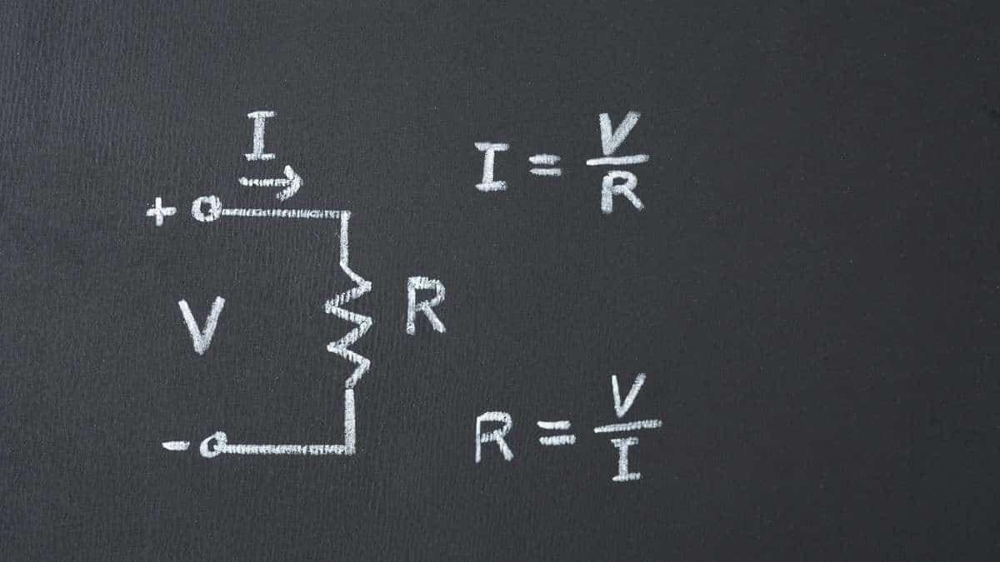
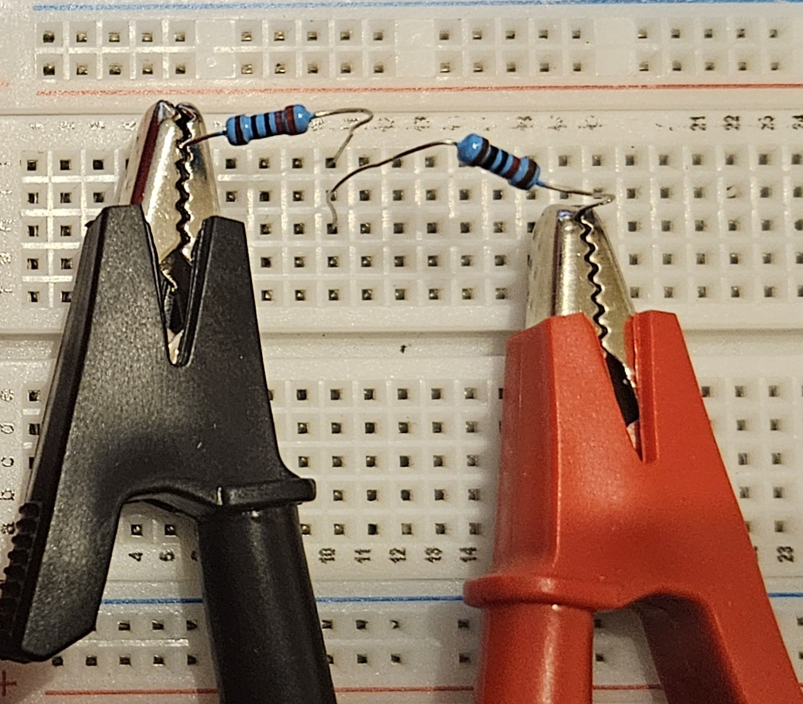
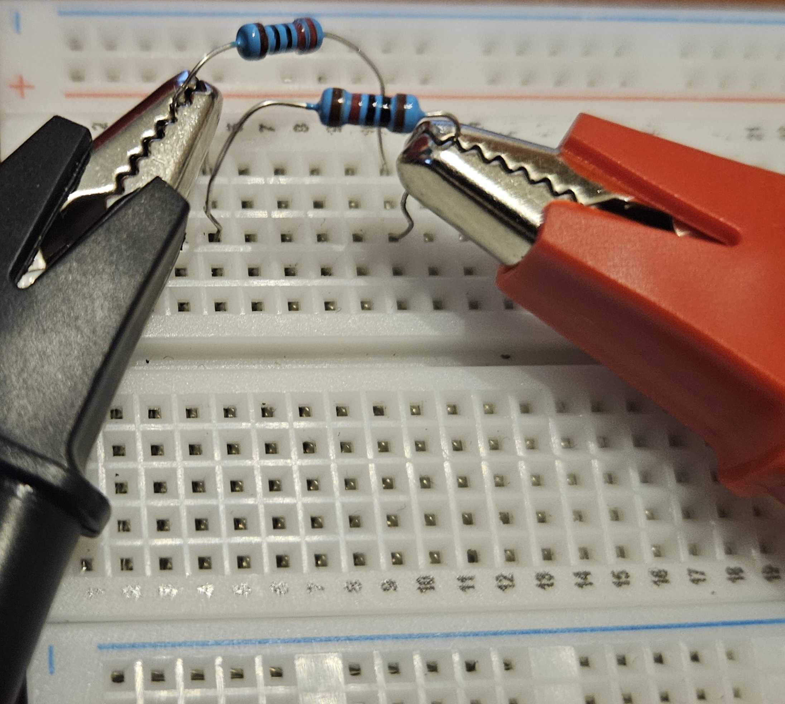
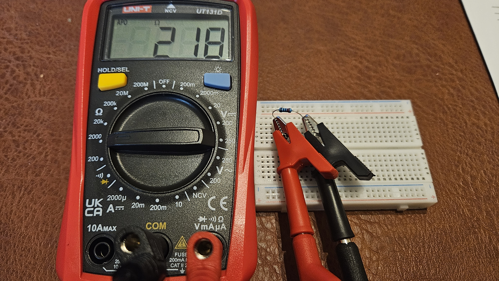
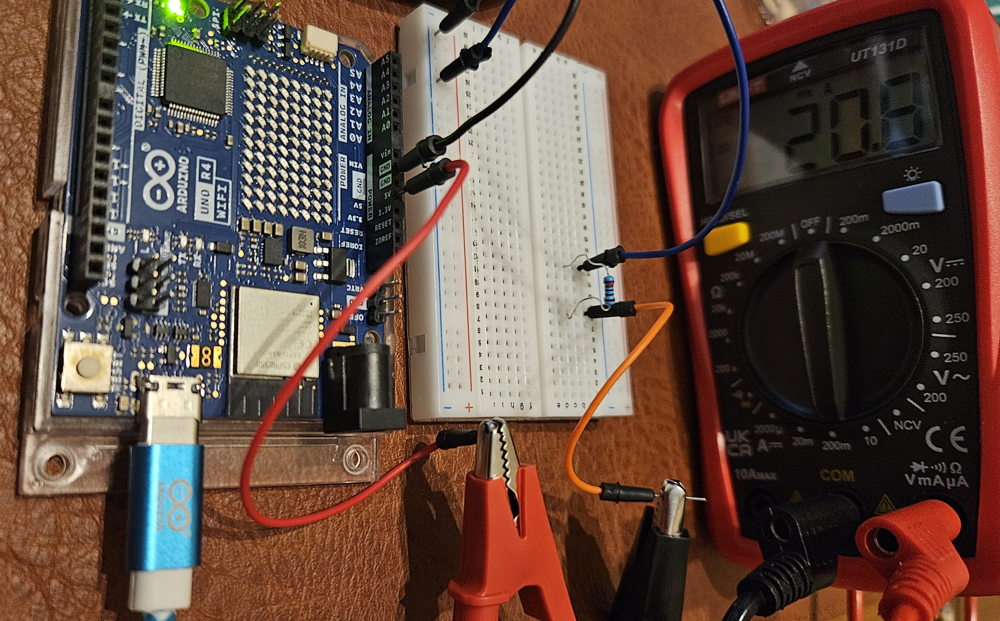

- Multimetro digitale misura R, V, I
- Sorgente DC a tensione fissa pile ricaricabili 9V o Arduino 5V
- Tre resistori R₁, R₂, R₃ R₁ = R₂ identici; R₃ diverso
- Basetta breadboard senza saldature
- Cavi di collegamento a banana o coccodrillo


-
1
Misura preliminare dei resistori singoli: A circuito disalimentato, misurare R₁, R₂ (scelti identici) e R₃ (diverso) in ohm con il multimetro in modalità Ω. Annotare i valori: serviranno come riferimento per il calcolo di Req teorica.
-
2
Misura delle combinazioni equivalenti: Montare su breadboard le quattro configurazioni previste (R₁+R₂ serie, R₁+R₃ serie, R₁∥R₂ parallelo, R₂∥R₃ parallelo). Per ciascuna, misurare Req a circuito disalimentato con il multimetro in modalità Ω.
-
3
Calcolo della corrente attesa: Per ciascuna configurazione, calcolare la corrente teorica Iteo = Vfissa / Req, dove Vfissa è la tensione della sorgente utilizzata (es. 5 V da Arduino o 9 V da pila).
-
4
Misura della corrente: Inserire il multimetro in serie al circuito con fondo scala prudenziale. Alimentare il circuito, leggere Imis, disalimentare. Ripetere per tutte le configurazioni.
⚠ Disalimentare sempre prima di riconfigurare il circuito sulla breadboard. -
5
Registrazione e confronto: Confrontare Iteo con Imis. Annotare deviazioni e interpretarle in termini di tolleranza dei resistori, resistenze parassite dei collegamenti e riscaldamento localizzato.
| Configurazione— | Req misurataΩ / kΩ | Iteo = V/RmA | ImismA |
|---|---|---|---|
| R₁ singola | 218 Ω | 15,138 | 21,1 |
| R₂ singola | 9,83 kΩ | 0,509 | 0,467 |
| R₁ in serie con R₂ | 10,04 kΩ | 0,498 | 0,459 |
| R₁ in serie con R₃ | 433 Ω | 11,547 | 9,61 |
| R₁ in parallelo con R₂ | 108 Ω | 46,296 | 39,4 |
| R₁ in parallelo con R₃ | 213 Ω | 23,474 | 19,5 |
L'esperienza ha verificato sperimentalmente la prima legge di Ohm in un contesto a tensione fissa: al variare della configurazione resistiva, la corrente segue in modo coerente la relazione I = V / Req, confermando la proporzionalità inversa tra corrente e resistenza a tensione costante.
Le regole di composizione delle resistenze sono rispettate: la resistenza equivalente in serie è sempre superiore al valore più grande, quella in parallelo sempre inferiore al più piccolo. La corrente si comporta di conseguenza, diminuendo in serie e aumentando in parallelo rispetto ai singoli componenti.
Le deviazioni tra valori teorici e misurati sono interpretabili con le fonti di incertezza tipiche del laboratorio: tolleranza dei componenti, resistenze di contatto sulla breadboard e riscaldamento per effetto Joule. L'esperienza offre una base concreta per l'analisi dei circuiti resistivi e l'estensione verso partitori di tensione, corrente e dimensionamento degli alimentatori.